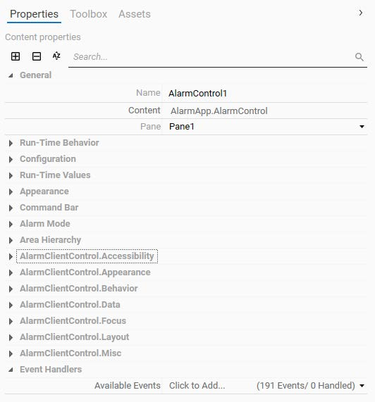
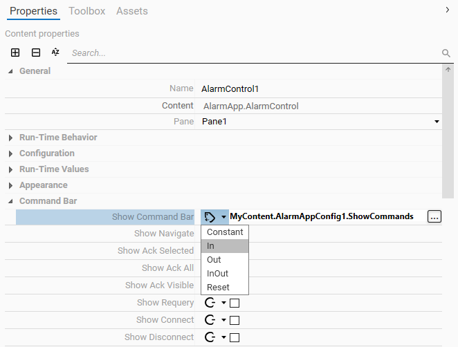
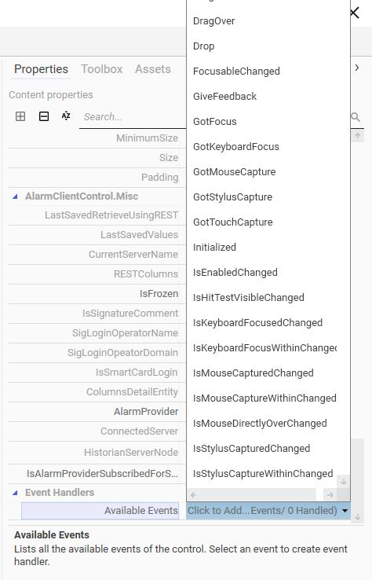
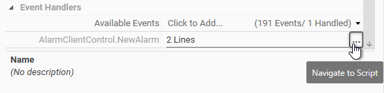
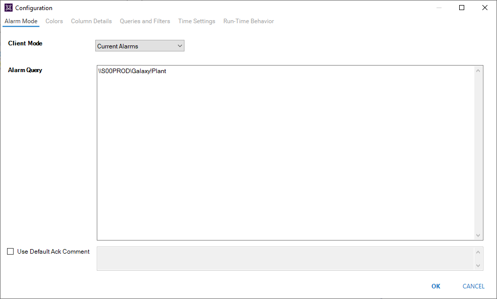
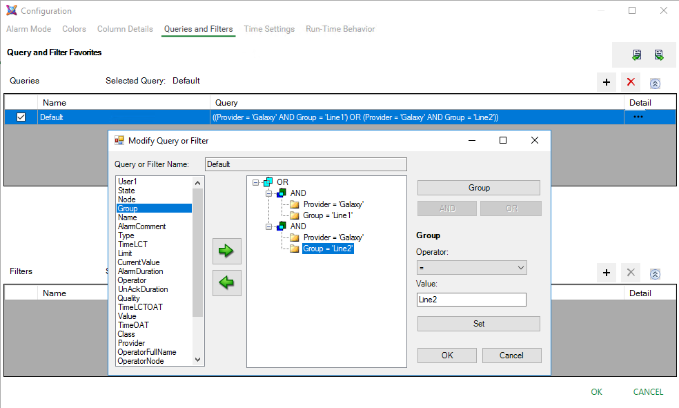
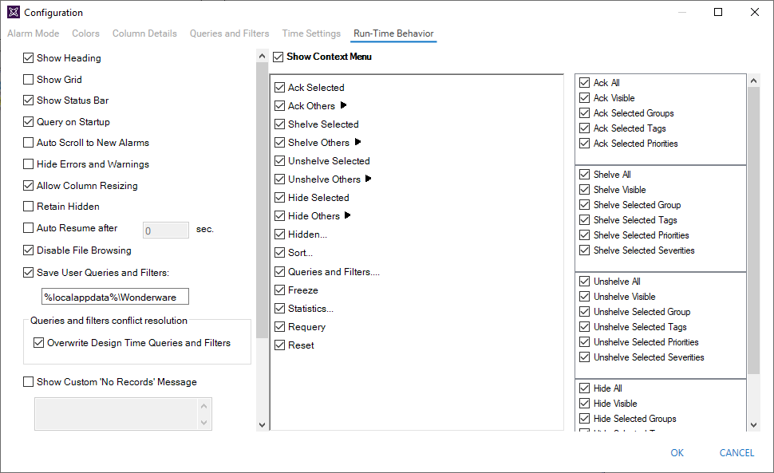
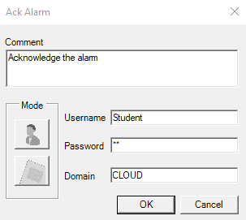
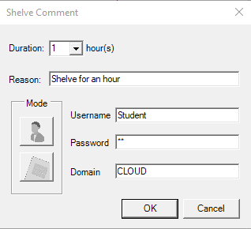

Module 9 — Alarms and Events | Pages 531-542
Section 2 – Live Alarm Visualization
Section 2 – Live Alarm Visualization
Introduction
Application Server handles the real-time reporting of alarms, and provides clients for viewing
current alarms. Application Server can detect events and report them to clients as recent events.
You can create ViewApps that include a display for alarms and events, and allow operators to view
and manage alarms and events. Current alarms require immediate attention, and operators can
acknowledge alarms within the ViewApp. Operators can also view recent events for analysis and
reporting.
An out-of-the box OMI App is provided to display alarms and events in ViewApps. Using the
AlarmApp, an operator can view the current alarms and recent events, acknowledge current
alarms, query and filter alarms and events, and more.
AlarmApp
AlarmApp is an OMI App that you can place in your ViewApps to show live and historical alarms
and events. At runtime, the pane configured with the AlarmApp shows alarms and events in
tabular form, with each row representing a single alarm or event. The background color of a row
for an alarm indicates the severity and current state of the alarms.
You can configure the AlarmApp to show current alarms, recent alarms and events, historical
alarms, historical events, or historical alarms and events. You can specify queries to subscribe
alarms and events from the alarm provider. You can specify conditions to filter alarms and events
displayed in the AlarmApp.
To use the AlarmApp in a ViewApp, you must assign it to a layout pane. You can assign the
AlarmApp to a pane from the Layout Editor or ViewApp Editor. Select the AlarmApp from the
Toolbox tab, and then from the preview area, drag and drop the AlarmControl to the pane.
Configure the AlarmApp
You can configure AlarmControl properties from either the Layout Editor or the ViewApp Editor.
When configuring the AlarmApp, properties appear on the Properties tab when the pane that
contains the AlarmControl is selected.
General properties are:
Name: Shows the name of the content. By default, it is an auto-generated name
based on the assigned control. It is editable.
Content: Shows the name of the AlarmControl assigned as the content. By default, it
displays as AlarmApp.AlarmControl.
Pane: Shows the pane that contains the AlarmControl.
This section describes how to use the AlarmApp to display and manage alarms and events in a
ViewApp. It also describes how to customize the appearance and runtime behavior of the
AlarmApp.
Run-Time Behavior properties provide configurations for AlarmApp runtime behaviors,
such as how the AlarmApp works within the context of the current area, whether column
headings are shown in the alarm grid, how alarms can be grouped by column within the
alarm grid, whether signatures are required to acknowledge alarms, and others. Some
examples are:
Follow Current Context: Determines if the AlarmApp participates in the context of
the current area. When this property is enabled, the alarm query automatically
changes to “\Galaxy!
Only Show Alarms on Current Asset: Determines if the AlarmApp shows
aggregated alarms for all assets contained in the currently-selected area, or if it shows
only alarms for the currently-selected asset. When this property is enabled, only
alarms for the currently-selected asset are shown, even if the asset is an area. This
property only has an effect when Follow Current Context is enabled.
Navigate On Double Click: Determines if the user must double-click on an alarm to
navigate to the asset from which the alarm is generated. This property is enabled by
default.
Configuration properties are:
Configuration: Provides an ellipsis button to open the configuration editor for the
AlarmApp.
Run-Time Values properties are:
Selected Row Tagname: Read-only property that can be used to bind a reference,
such as a ViewApp namespace attribute to get the Selected Row Tagname. At
runtime, the selected row tagname will output to the reference as a String value. This
is only applicable when a user manually selects the row, not when the system selects
the row.
Selected Row Asset: Read-only property that can be used to bind a reference, such
as a ViewApp namespace attribute to get the Selected Row Asset. At runtime, the
selected row asset name will output to the reference as a String value.
Appearance properties include the configurations of the background and foreground
colors for the AlarmControl. These colors may apply to the command bar and buttons and
the area hierarchy display. These colors do not apply to the Alarm grid.
Command Bar properties include configurations for the AlarmApp command bar. For
example, Show Command Bar determines if the command bar is shown above the alarm
grid area at runtime, and other properties in this category determine which buttons are
included in the displayed command bar. Available buttons include Navigate, Ack Selected,
Ack All, Ack Visible, Requery, Connect, and Disconnect. The Show Command Bar
property can be used to bind a reference, such as a ViewApp namespace attribute, which
can show or hide the Command Bar at runtime based on the reference value.
Alarm Mode properties are:
Alarm Query: Read/write property to get or set an alarm query dynamically at
runtime. It can be used to bind a reference to a ViewApp namespace attribute or to an
application object attribute. This query overrides the query configured in the
Configuration dialog box.
Client Mode: Read/Write integer value (1-5) that determines the type of alarm data
shown in the AlarmApp. This property can dynamically bind to a namespace reference
or to an attribute.

Section 2 – Live Alarm Visualization
Area Hierarchy properties determine if the area hierarchy tree is shown or hidden in the
AlarmApp at runtime. Also included are properties for configuring font settings for the
hierarchy tree if shown. Some examples of Area Hierarchy properties include:
Show Area Hierarchy: Determines if the area hierarchy tree view appears within the
AlarmApp. This property is disabled by default, which hides the area hierarchy tree
view. This property can be used to bind a reference, such as a ViewApp namespace
attribute, which can show or hide the area hierarchy tree at runtime based on the
reference value.
Show Alarm Indicator: Determines if an alarm indicator appears beneath an area
name shown on the area hierarchy of the AlarmApp. This property is enabled by
default, which shows the alarm indicators.
.NET Alarm Client control properties are from the underlying .NET control of the
AlarmApp, which are exposed and can be assigned values from the Layout Editor or
included in scripts.
.NET property groups are identified by the AlarmClientControl prefix in their titles that
appear on the Properties tab. For example, the AlarmClientControl.Accessibility title
appears immediately beneath the Area Hierarchy group of properties.
For more information about .NET properties. please refer to Microsoft resources, such as:
http://docs.microsoft.com/en-us/donet/api/system.windows.forms
For more information about Alarm Client Control properties and methods, refer to the AVEVA
Alarm Client Control User Guide that is delivered with System Platform 2023.

Binding AlarmApp Run-Time Properties
The AlarmApp includes runtime properties that are exposed as configurable properties, which
determine the visual aspects or functional behaviors of the AlarmApp during runtime. Configuring
some of these properties also applies to the configurations available in the Configuration Editor,
such as Alarm Query, Client Mode, and Requires Ack Signature.
Most of the properties include a list of binding options to configure a static or dynamic value based
on the type of binding between the property and its associated reference. You can select a
dynamic binding option from the list and then configure the value by specifying a reference, such
as a reference to an attribute defined in a custom ViewApp namespace or a public custom
property of a symbol assigned in the same layout. With a dynamic binding option, these properties
can be changed dynamically based on the reference values at runtime.
In the example below, the Show Command Bar property is binding to the reference:
MyContent.AlarmAppConfig1.ShowCommands
ShowCommands is a public custom property defined in a symbol named AlarmAppConfig, which
is assigned to the same layout with the AlarmControl.


Section 2 – Live Alarm Visualization
Event Handlers
The Event Handlers category on the Properties tab lists all available events for the control, and
you can create an event handler script by selecting an event from the list.
The underlying control of the AlarmApp includes a set of public events that can be used for
creating event handler scripts. These events are identified by the AlarmClientControl prefix in their
names that appear in the list of the available events. You can select a public event of the control
from the list to add an event handler script.
After the event handler script is created, you can navigate to the Script page to edit the script by
clicking the ellipsis button to the right of the added script. More information about layout scripts is
provided in Module 13.
In the example below, the AlarmClientControl.NewAlarm event handler script is created.

AlarmApp Configuration Editor
The AlarmApp configuration editor allows you to configure alarm mode, color, column detail,
queries and filters, time, and runtime behavior settings.
Alarm Mode: Allows you to specify Client Mode, a default Alarm Query, and a default
acknowledgment comment.
Colors: Allows you to specify text and background colors for events, headings, alarm
states, and more.
Column Details: Allows you to specify display names and widths for columns, as well the
sort order for alarm records shown at runtime.
Queries and Filters: Allows you to specify query and filter favorites.
Time Settings: Allows you to specify time zones and date/time formats for alarm and
event records shown at runtime.
Runtime Behavior: Allows you to configure the behavior and appearance of the
AlarmApp at runtime.
Alarm Mode Page
Options on the Alarm Mode page depend on which Client Mode is selected. For example:
If Current Alarms or Recent Alarms and Events is selected, fields for specifying a default
alarm query and default acknowledgment comment appear. A default alarm query must
include Provider and Group as criteria.
If Historical Alarms, Historical Events, or Historical Alarms and Events is selected, fields
for specifying database connectivity and other settings appear.
Configure AlarmApp for Current or Recent Alarms and Events
To configure the AlarmApp to show current alarms, set Client Mode to Current Alarms. To
configure the AlarmApp to show recent alarms and events, set Client Mode to Recent Alarms and
Events. Then, provide the default query filter.
Optionally, you check the Use Default Ack Comment option and enter text for the default
acknowledgment comment.

Section 2 – Live Alarm Visualization
Alarm Queries
The AlarmApp supports standard Galaxy alarm query formats. Some example formats are:
\galaxy!area
\\node\galaxy!area
Query syntax is the same for both Current Alarms and Recent Alarms and Events. Queries for
Historical Alarms, Historical Events, and Historical Alarms and Events follow syntax rules for SQL
Server database queries.
Queries and Filters Page
You can use the Queries and Filters page to create queries and filters to show alarms and events
as needed. When the AlarmApp is configured for Current Alarms or Recent Alarms and Events,
the default query specified on the Alarm Mode page is displayed on the Queries and Filters page
as the “Default” query. The default query cannot be deleted, but it can be customized from the
Queries and Filters page.
Queries and filters configured on this page are available from a list of preconfigured queries and
filters at runtime. At runtime, you can also create new queries and filters or modify existing queries
and filters to show alarms and events as needed.
For example, the following shows the default query is configured to display current alarms from
Line1 and Line2 areas:
Queries and filters can be exported to an XML file, and you can load queries and filters from a file.

Runtime Behavior Page
You use the Runtime Behavior page to configure the appearance and behavior of the AlarmApp at
runtime.
For example, you can enable or disable options such as Show Heading, Show Grid, and Show
Status Bar to control the appearance of the control at runtime. For configuring runtime behavior,
options such as Disable File Browsing, Overwrite Design Time Queries and Filters, and options for
requiring signatures for shelving and acknowledging alarms are available.
Manage Alarms at Runtime
You can use the AlarmApp to manage alarms at runtime, including acknowledging alarms,
shelving and unshelving alarms, hiding alarms and events, filtering alarms and events, and more.
Acknowledge Alarms
Acknowledging current alarms ensures that an operator is aware of a temporary alarm state
change. To be able to acknowledge alarms through the AlarmApp in a running ViewApp, the
AlarmApp must have the Client Mode configured as Current Alarms.
You can use the AlarmApp to acknowledge:
One or more selected alarms
All alarms, including alarms that are not visible due to the limited display space of the
AlarmApp
All visible alarms
All alarms with common values, such as alarm priority
A comment can optionally be entered when acknowledging an alarm at runtime. The comment will
be logged with the alarm acknowledgment record.
When security is enabled in the Galaxy, alarms can be acknowledged only by operators with
proper authorization.
Section 2 – Live Alarm Visualization
Shelve and Unshelve Alarms
Shelving alarms allows operators to temporarily suppress them for a fixed period. Shelving alarms
will temporarily filter them from showing through the alarm grid. The shelved alarms can only be
shown when a query or filter that is configured to show the shelved alarms is selected at runtime.
To shelve or unshelve alarms through the AlarmControl at runtime only applies when the
AlarmControl has the Client Mode configured as Current Alarms.
You can use the AlarmApp to shelve:
One or more selected alarms
All alarms
All visible alarms
All alarms with common values, such as alarm priority
When shelving alarms, you must provide a duration for which the alarms remain shelved and enter
a mandatory comment.
Shelved alarms can be manually unshelved before the shelved duration expires. To unshelve
alarms, you need to create a query or filter to show the currently shelved alarms, and then use the
context menu within the alarm grid to unshelve alarms as needed.
When security is enabled in the Galaxy, alarms can be shelved and unshelved only by operators
with proper authorization.
Query and Filter Alarms at Runtime
Alarms can be queried and filtered at runtime by using the queries and filters that are already
defined in the configuration. You can select an existing query to subscribe alarms and events that
meet the criteria, and then select a filter to narrow the criteria without re-running the query or
modifying the query.
Queries and filters can also be created at runtime, and if the AlarmControl is configured with
Overwrite Design Time Queries and Filters enabled, the queries and filters created at runtime
always take precedence over the queries and filters created at design time. If Disable File
Browsing is unchecked, the AlarmApp allows queries and filters to be exported to an *.xml file and
queries and filters to be imported from an existing *.xml file.
Hide Alarms and Events
Alarms can be hidden or unhidden in the AlarmApp grid. When the AlarmApp is hiding alarms, it
ignores the hidden alarms until they are unhidden. The actual alarm generation is completely
unaffected by hiding the alarm records. Alarm records are still logged into the alarm history.
Sort Alarms During Runtime
The AlarmApp supports alarm sorting for up to four columns at design time and runtime. At
runtime, operators can configure sorting of even more columns by clicking on the column headers
of the AlarmControl. You can sort alarms in ascending or descending order for selected columns.
Changes made to the sorting at runtime are lost when you switch back to design time.
Acknowledge Alarms that Require Signatures
When the AlarmControl is configured to require an acknowledgment signature for alarms with an
alarm priority range, you must provide your signature in the Ack Alarm dialog box to acknowledge
alarms at runtime. If one or more of the selected alarms falls within the configured priority range,


the comment is prefixed in the alarm record with "Signed ACK -" indicating that it is a signed
acknowledgment. Otherwise, it is prefixed with "Std ACK -" indicating that it is a standard
acknowledgment.
Shelve Alarms that Require Signatures
If a shelving signature is required and application security is active, attempting to shelve alarms
from the alarm grid displays a Shelve Comment dialog box. The dialog box includes fields for the
operator to enter user credentials (name, password, domain), select a shelve duration, and enter a
mandatory comment.
By default, the logged-in user appears in the Username field. If the application security type is
ArchestrA, then ArchestrA appears in the Domain field and cannot be edited. If the credentials are
valid, the AlarmApp attempts to shelve the selected alarms.
If the user credentials are not valid, the AlarmApp shows an error message. When the operator
clicks OK on the error message, the Shelve Comment dialog appears again with the entered user
name, comment, and duration. The Password (or PIN) field is blank. The operator can attempt to
authenticate again or cancel.
Section 2 – Live Alarm Visualization
Freeze and Unfreeze the AlarmApp Grid
You can freeze the alarm grid to prevent the grid from being updated with changes. For example, if
new alarms occur while the alarm grid is frozen, the new alarms are only shown after you unfreeze
the alarm grid.
If a duration is configured for freezing alarms, then after that time period, the alarm grid
automatically unfreezes to avoid the grid unintentionally remaining frozen. An example would be if
an operator leaves the workstation and returns without realizing that the alarm grid is still frozen.
The alarm grid automatically unfreezes when any of the following change:
Alarm Mode
Alarm Query
Query Filter
After you unfreeze the alarm grid, it updates with the new alarm records and any other updates
that occurred while the grid was frozen.
Review the key concepts section above for the core topics discussed.
Consider how the concepts in this lesson fit into the broader System Platform and OMI framework.